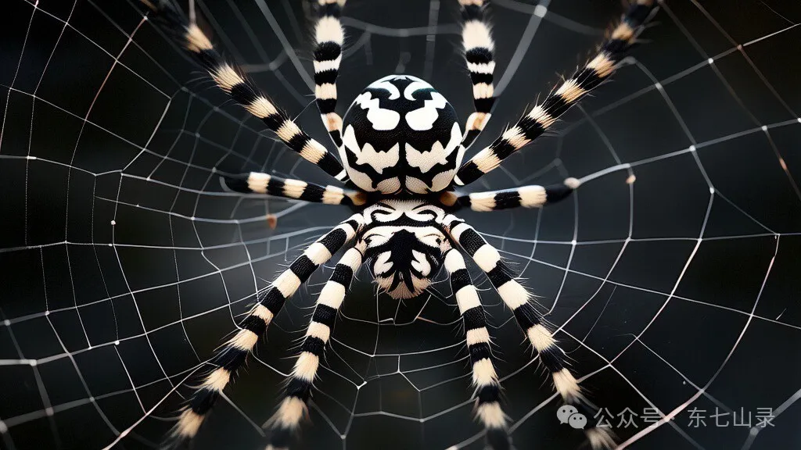

“如果这一切都是命中注定……那我就不信命！”
——凤金煌
《人祖传》中记载着，人祖耗费巨大精力，收集蛊材，甚至付出了自己的双手，终于炼成了财富蛊。
他便带着儿子炎煌雷泽，女儿万金妙华，再次来到羽民居住的地方。但是很奇怪，这么的羽民统统消失，不见了踪影。
“这是怎么回事呢？”人祖疑惑。
“那是因为我来到了这里，那些羽民都害怕我，所以全都跑了。”一只黑白相间的蜘蛛悠然漫步，出现在人祖的面前。

“你是谁呀？”人祖问。
蜘蛛笑道：“人啊，你走过我在生死门中开辟出的路，还不知道我是谁？我就是宿命蛊。”
万金妙华接着问：“宿命蛊啊，你还没有我的手掌大，那些羽民为什么害怕你呢？”
宿命蛊笑道：“因为他们都要追求自由，而我宿命却要束缚他们，限制他们。”
炎煌雷泽抱怨起来：“原来你打的主意，和我们一样。你真是失败，连一个羽民都没有捉到，还连累我们。”
宿命蛊哈哈大笑：“谁说我失败了？这些羽民都在追求自由，可他们知道些什么？他们成功逃脱，都是肤浅的表象，其实我早就束缚住了他们。他们追求自由的路，都是我安排出来的，他们却自以为成功，什么都不知道。你们也是一样，看看你们自己罢。”
人祖、炎煌雷泽、万金妙华便看自己的身体。他们发现不知何时，自己的手脚还有身体，都粘着苍白色的蛛丝。
他们又发现，不仅是自己三人，连周围的花草树木、石头流水都有蛛丝牵连。这些蛛丝，一根根汇聚起来，形成一片蛛网，从人祖三人的视野蔓延出去。
“这就是我编织的丝网，叫做万般网。世间的万事万物，都在这片网中，受到我宿命的摆布和操控。你们所遇到的人，发生的事，都是受到我的操纵。”宿命蛊道。
人祖三人心生寒意，连忙挣扎。
宿命蛊便笑：“没有用的，你们不可能挣脱得出。宿命是不可更改的。”
人祖愤怒地瞪视宿命蛊：“宿命啊宿命，你为什么要摆布我们，要捉弄我们？照你这么说，我所遭遇到困苦和不幸，都是你的缘故。我失落了儿女，也是因为你的关系！”
宿命蛊悠然地道：“人啊，我知道你想要救出你的大儿子太日阳莽，可是他已经死了。死亡是人必定的宿命，你根本救不活他的。还有你想依靠财富蛊，来救你的女儿森海轮回，那也是不可能的。”
说着，一条蛛丝就拽住人祖的财富蛊，将它拉扯出来，拖拽到宿命的面前去。“快放下，那是我们的蛊虫！”炎煌雷泽气得大叫。
万金妙华红了眼眶，抽泣道：“这是我的父亲牺牲了自己的双手，十分辛苦才炼出的财富蛊。你凭什么拿走？”
人祖极力挣扎，但蛛丝却是越来越紧，将他们三人牢牢地束缚在原地，不能动弹。
宿命蛊哈哈大笑：“生死有命，富贵在天。人呐，按照你的宿命，你注定贫穷、卑贱，饱受折磨和屈辱，你会发疯，最终你也必定死亡。你虽然炼成了财富蛊，但你没有这个命来享有它。命若穷，掘着黄金化作铜；命若富，拾着白纸变成布。这种种一切都在我的操控之中。”
人祖和炎煌雷泽、万金妙华都非常生气，痛骂宿命蛊。宿命蛊一点都不恼怒，悠然自得：“骂我的多了去了，但那又怎样呢？人呐，不管你怎么痛骂宿命，都不会改变什么。”
宿命蛊说着，忽然发力，猛地拽动蛛丝，将炎煌雷泽和万金妙华都远远地抛飞出去，消失在人祖的视野尽头。
“我的儿女啊！”人祖悲号。
宿命蛊幽幽地道：“人呐，你不要怪我，这一切都是你的宿命。其实不止你，孤独是每一个人的宿命。即便是儿女，也不会相伴你一生，总会离你远去。一切的相逢都是暂时的，分别才是正常的。”
人祖却一个劲地挣扎，但他越挣扎，身上的蛛丝就缠绕得越多，将他紧紧包裹住。人祖感到庞大的压力，并且这股压力越来越大，从四面八方挤压着他，他几乎要窒息。
他张开大口，狠狠地喘息，因为无力，渐渐停止挣扎。然后人祖呜呜地哭泣起来，泪水滚落脸颊：“我的命，为什么这么苦啊！”
宿命蛊沉默。但这个时候，一个声音从人祖的内心深处传出来。那是自己蛊发出的声音：“人啊，你与其哀叹自己的命，倒不如相信自己的力量！”
人祖停止哭泣，他忽然意识到：“对，我虽然没有力量蛊，但自己蛊却是吞吃了力量蛊一口，拥有自己的力量。自己蛊，我只能靠你了。”
自己蛊便进发出耀眼的光，企图撑破蛛丝。蛛丝被撑破一些，但很快更多的蛛丝把人祖缠绕。“自己的力量不行吗？”人祖着急起来，
“对了，自己蛊啊你不仅咬了力量蛊一口，还咬了爱情蛊一口。力量不行的话，我们就依靠自己的爱情吧。”于是自己蛊进发出柔和的光，尝试拉断蛛丝，但同样失败了。
宿命蛊道：“人啊，你怎么还不了解？爱情就是一种宿命，我安排它，令太日阳莽爱上古月阴荒，让石人也爱上古月阴荒。我还将成功和失败，都安排在他们的人生当中，所以最终他们都死了。”
“不！不——！”人祖嘶吼、哭嚎。
宿命蛊静静地聆听着。
人祖渐渐没有力气哭嚎，他有气无力地呢喃自语：“我现在明白了，为什么羽民都要追求自由。”
宿命蛊笑道：“人呐，你也想追求自由？”
人祖点头：“不错，我若是自由，就再不受你宿命的束缚了。”
宿命蛊：“但你看看那些羽民，他们也追求自由，还不是受到我的摆布吗？”
人祖摇头：“我追求的自由，和他们不同。我追求的是绝对的自由。”
宿命蛊哈哈大笑：“一个人的绝对自由，那就是疯狂。人呐，你看，你要追求自由，其实就是走向疯狂。我说过的，你会疯。那就是我给你安排的道路，你无法摆脱我的控制。”
“不！我不信！我会用我自己的力量，还有智慧，来得到自由。我不信你的话，我会摆脱你的控制！”人祖反驳道。
宿命蛊的笑声更大了：“人呐，你真的要疯了，你已经神志不清。你不记得了吗？你的自己蛊只是吃了力量蛊、爱情蛊一口，所以你只有自己的力量和爱情，并没有自己的智慧啊。人呐，当你自以为聪明，这就是你要疯了的征兆。”
“哈哈哈，哈哈哈。”这次轮到人祖大笑起来，“我不信你，宿命蛊啊，我不信！我不信世间有命。”
宿命蛊沉默了一下，这才道：“你就算不信，我还是存在的。”
人祖却道：“不，不是这样。当我不信的时候，你就不存在了。我不信命，命就不存在！哈哈哈！”
宿命蛊摇头，叹息：“真是可怜，人呐，你已经疯了。”
人祖披头散发，鼻涕和眼泪糊了一脸，他挣扎，他跪地，他瘫倒在地上四处打滚。正如宿命所说，他成了疯子。